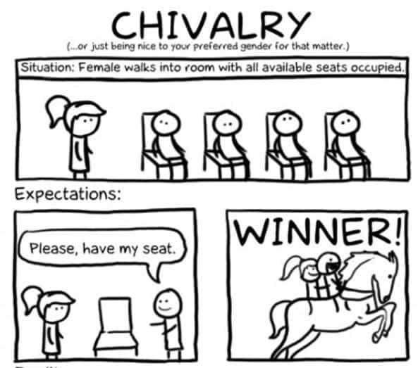
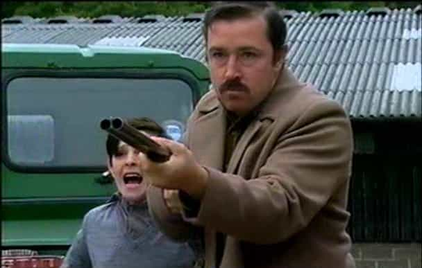
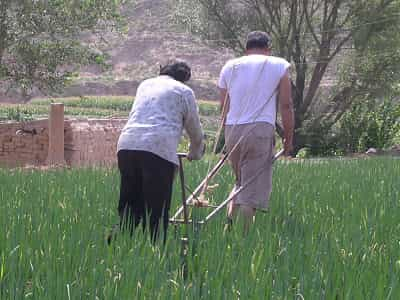

< < < Back
4 Reasons Why Beta Males Persist In Human Populations – Return Of Kings
A recent theme here is how men are pressured to act unnaturally in today’s environment. This causes a great deal of anguish among males. In my last post on why girls go for bad boys, I explained the phenomenon of why girls seem to prefer the alpha bad boy types over the much more stable, nicer beta males. However, this leaves a very important unanswered question that was left in the comments section:
OK, just one question: if this is all true, why haven’t beta males been bred out of the population?
1. Social Conditioning
Feminists claim to be against traditional sex roles, but that only applies to women’s roles. They still embrace the ideas of chivalry and men paying for a date, among other things. Although chivalry is thankfully getting destroyed more and more each year it is still very alive and kicking in some people. The MSM and many people from older generations still sell the idea that being a “good man” is the key to winning a girl’s heart. Therefore most men are still beta because they have been lied to by the authority figures in their lives (TV and parents, in that order) for so long that they refuse to accept the facts after they have been thrown right in their face.

I’m sorry if the image above made anyone throw up.
2. Arranged Marriages
Arranged marriages have been very common around the world and across cultures in pre-industrial revolution times. In all of these cultures the idea of gaming women would be useless. If a man wanted to get a woman then appealing to a girl’s hypergamy would only result in getting killed by the girl’s father and other male relatives.

The men who were most successful were the ones who were most appealing to the father. These were the beta males who could prove that they would be the best at taking care of the the father’s daughter and his grandchildren. So in cultures where there were arranged marriages the beta was king. Men have adapted/evolved over thousands of years (hundreds of generations) to be appealing to the girl’s father not the girl herself.
Since these cultures rewarded virtuous behavior in males, betas would thrive and prosper more than if girls were free to choose their own mates and bad boy behavior was rewarded (like it is today). Cultural survival of the fittest in action.
Over hundreds of iterative generations the alpha male, who was most likely extremely common in pre-civilizational hunter gatherer societies, was almost completely replaced by the blue collar worker beta male.
However, since female fertility was so precious to the continued survival of early civilization, society could not ban women who were attracted to the alpha male from reproducing. Women who were attracted to bad boys were forced via arranged marriage to marry beta males.
3. Hard Times
Neglected alpha male children could not survive without a caring father in earlier times before welfare and society’s safety net. An American woman living on a homestead in the western U. S. during the mid 1800s would not survive for long without a man to protect her and her children from wild animal attacks and to plow the fields so they would have food on their table. Yes, a few women did it without a man, but it was rare.
Although they may have preferred a different type of man, it was simply not an option. Screwing the alpha male bandit would have resulted in being shunned by society and dying alone. If a man were given an option of death or marrying and staying with an HB6, most men would choose life. So again, evolutionary pressures were put on men to become beta while women stayed biologically the same as they were in hunter gatherer society.

However, in today’s society this is no longer the case. A woman who makes $8 an hour working as a barista at Starbucks can afford a small studio apartment with heating and A/C and never have to worry about animal attacks. She can enjoy movies, music, and live a life that is much more luxurious than the most well-to-do 1800’s homesteader’s wife could even imagine. Women hardly need a man anymore if they are single. If they wish to have children they would prefer having a man around of course, but with the welfare state it is much easier to do without one than before.

4. Nosy Neighbors In Small Towns
Comments on my “Why Girls Go For Bad Boys” article also pointed out the problem of paternity fraud. The fact is that about 10% of children are not born by the man the woman says is the father. Readers claimed that because of this there is no way that evolution would favor the beta husbands because they were not the ones reproducing.
To be clear, all paternity fraud is bad and I am not diminishing the damage it caused by saying this, but 10% paternity fraud still leaves 90% of children being sired by the husband so the beta genes would still be favored. We can not know what the rate of paternity fraud is prior to the development of paternity tests, but we do know that most people lived in small rural communities where it is nearly impossible to keep a secret. Also the husband would often work on the fields just outside the house so the opportunities to have an affair were probably much lower than today when a husband is predictably gone from 9-5 every day.
The existence of some natural alpha males in today’s society shows that the above reasons were not good enough to completely replace alpha males with beta males. However, they were enough to change the demographic of the typical man’s natural state toward beta when the right conditions were in place.
Undoubtedly our early history was very challenging times for the alpha male as he would often find himself at odds with the expectations of his neighbors. He was forced to act against his natural impulses in order to find acceptance. Now it is the time for the natural beta male to go against his natural instincts if he wishes to find a place in the changed modern world. The current culture is unsustainable, but we are not going back to traditionalism and marriage so men need to be prepared to adapt to whatever is to come in the following decades.
Read More: This is Why Girls Go For Bad Boys


{kind=link}
{kind=link}
{kind=link}